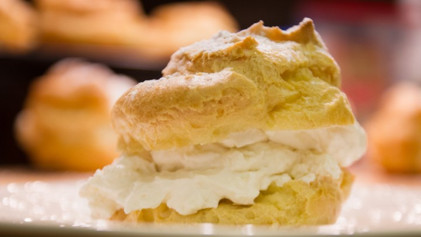

Cream Puffs

Ingredients
- 2 (3.5 oz) Packages of Instant Vanilla Pudding Mix
- 2 Cups of Heavy Cream
- 1 Cup of Milk
- 1/2 Cup of Butter
- 1 Cup of Water
- 1/4 Teaspoon of Salt
- 1 Cup of All-Purpose Flour
- 4 Eggs
Directions
- Mix together pudding mix, cream, and milk.
- Cover and refridgerate mixture to set.
- Preheat oven to 425 degrees Farenheit or 220 degrees Celsius.
- Boil water and butter in a large pot.
- Stir in flour and salt until the mixture forms a ball.
- Move the dough into a large mixing bowl.
- Using a wooden spoon or stand mixer, beat in eggs one at a time.
- Drop tablespoonfuls onto an ungreased baking sheet.
- Bake for 20 to 25 minutes, or until golden brown. Centers should be dry.
- When the shells are cool, split and fill them with the pudding mixture,
or use a pastry bag to pipe the pudding into the shells.
Original Recipe by Shellie Wendel.
Image provided by MRSJPVAN2.
Contact Me
miya.fordah@umconnect.umt.edu
The University of Montana
32 Campus Dr
Missoula, MT 59812